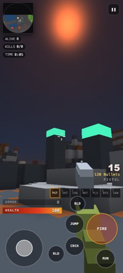

Doom pace.
Minecraft blocks.In your browser. Right now.
A voxel shooter that moves at Doom speed — no acceleration ramp, real gunfeel, enemies that are brighter than their background. Four modes. No install, no account, no matchmaking queue: the match is already running with bots in it when you click.
▶ Play now
Play offline
Online build has real multiplayer and saves progress on the server. Offline build is single-player, works without a connection, costs nothing to host.

Time to interactive
0.31s
the leading browser voxel FPS measures 3.16 s
Click → shooting
<1s
bots fill the room instantly; no 25 s lobby
Frame rate
60fps
median, 915×412 under 4× CPU throttle
Phone
portraittoo
dedicated fire button; the bar refuses portrait outright
Four modes
Campaign
Quest
Authored levels with keys, doors, switches and secrets. Bar: DOOM 1993 E1M1. Episodes are data, so more are coming.
Creative
Builder
Place and break blocks, fly, undo. Bar: Minecraft Classic. Persistent shared worlds behind a flag.
Co-op survival
Horde
Fortify between waves; the enemies break your walls. The mode that justifies the mash-up.
PvP
Deathmatch
32 players, 7 Doom weapons, rockets that reshape the map. Instant bot-filled start.
Screens


What's real, and what isn't yet
Real: four modes, rigged characters with an avatar editor, synthesised audio grounded on the real DOOM WAD,
online multiplayer with an authoritative server, a server-granted XP/Scrap economy (dark by default while it's tuned), and
a player profile. Source is public.
- Not yet: items and skins, trading, seasons and tournaments, the sponsor platform. Specced, not shipped.
- No ads today. The slots exist; nothing fills them.
- Progress: the online build saves on the server by device; accounts are new and optional.